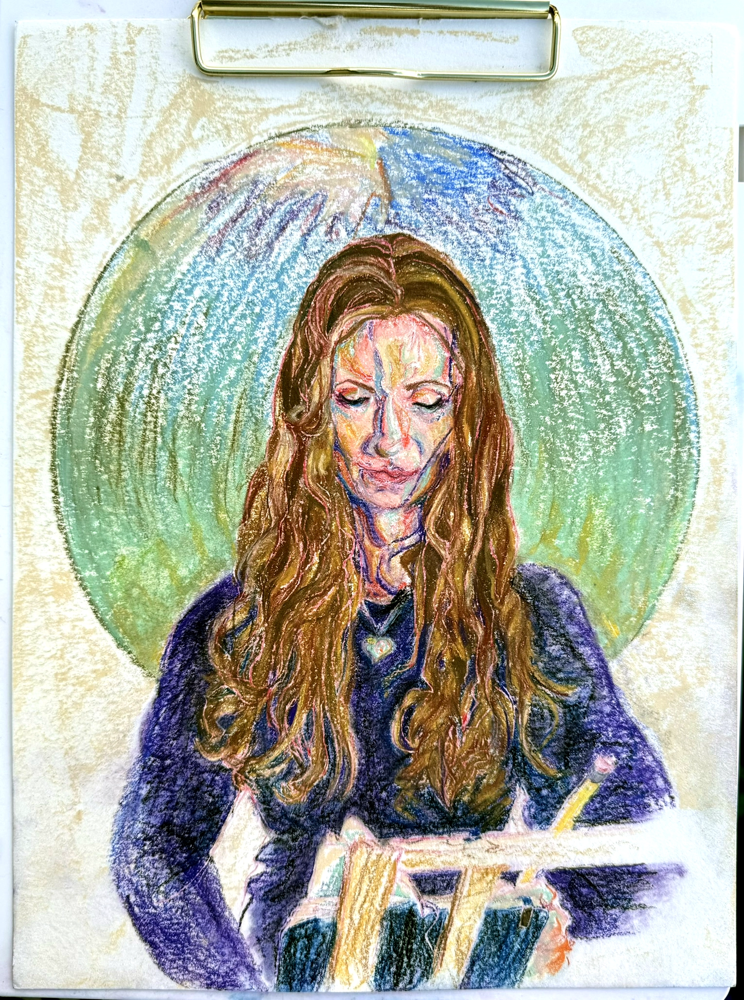

Destiny Barrett

As a visual creative, I have several interests & skills, including:
- Traditional Art,
- love literature,
- run a Temporary Tattoo booth,
- make Graphic Designs,
- & do Front-End Coding.
Helping people bring their ideas to life is my purpose, so don't be shy, let's make something beautiful. Once you have gone through some of these projects here you may become inspired, knowing what type of work we could do together. Delve into my Creative Projects